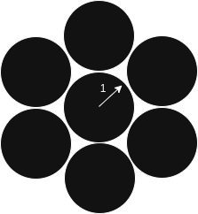
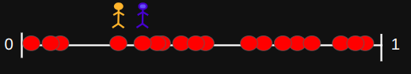

Spatial Queues with Nearest Neighbour Shifts
B. R. Vinay Kumar & Lasse Leskelä
INRIA NIM
April 15, 2025
Sophia Antipolis, France
Motivation
- Modern service systems are spatial — think EV charging stations, supermarkets, or airports.
- Customers may move between servers based on local congestion.
- Goal: Understand overload behavior when customers follow nearest neighbor shifting.
EV charging


J. Kang, C. Kan, and Z. Lin,
“Are Electric Vehicles Reshaping the City? An Investigation of the Clustering of Electric Vehicle Owners’ Dwellings and Their Interaction with Urban Spaces,”
ISPRS International Journal of Geo-Information, vol. 10, no. 5, May 2021.
System Model
- $N$ service stations distributed uniformly $\{X_i\}_{i=1}^N \subset [0,1]^d$
- Each service station:
- Service rate: $\mu$
- Arrival process: $\lambda$
- Infinite capacity
-
\((k, p)\)-Nearest Neighbour Shift (NNS)
- Customer arrives at server $i$
- With probability $1 - p$, stays at $i$
- With probability $p$, chooses uniformly among $k$ nearest neighbours $\mathcal{N}_k(i)$
Problem statement
-
Define the effective arrival rate at server $i$:
\(\lambda_{\text{eff}}(i) = \) \(\lambda(1 - p)\) \(+\) \(\sum_{j: i \in \mathcal{N}_k(j)} \frac{p}{k} \lambda\)
- The load at server $i$ is $$\rho_i = \frac{\lambda_{\text{eff}}(i)}{\mu}$$
- A server is overloaded if $\rho_i > 1$
-
The main object of interest:
\(\mathcal{O}_N\) \(= \frac{1}{N} \left| \{ i : \rho_i > 1 \} \right|\)
Fraction of overloaded servers
Main Result: General Dimension
- If $\frac{\lambda}{\mu} \leq \frac{1}{1 - p + \alpha_d p}$, then $\mathcal{O}_N = 0$ a.s. for all $N$.
- If $\frac{\lambda}{\mu} > \frac{1}{1 - p + \alpha_d p}$, then there exist constants \(q_{d,k,n}\) and \(\sigma_{d,k}\) such that
- Law of large numbers:
\(\ \ \ \ \ \mathcal{O}_N\) \(\xrightarrow{\text{a.s.}} \sum_{n = \lfloor \theta \rfloor + 1}^{\alpha_d k} q_{d,k,n}\)
where $\theta = k + \frac{k}{p} \left( \frac{\mu}{\lambda} - 1 \right)$
- Central limit theorem:
\( \ \ \ \ \ \sqrt{N} (\mathcal{O}_N - \mathbb{E}[\mathcal{O}_N])\) \(\xrightarrow{d} \mathcal{N}(0, \sigma_{d,k}^2)\)
- Law of large numbers:

\(\alpha_d \le \text{ kissing number}\)
Main Result: \(d=1\) and \(k=1\)
- If $\frac{\lambda}{\mu} \leq \frac{1}{1 + p}$, then $\mathcal{O}_N = 0$ a.s. for all $N$.
- If $\frac{\lambda}{\mu} > \frac{1}{1 + p}$, then
- Law of large numbers:
\(\ \ \ \ \ \mathcal{O}_N\) \(\xrightarrow{\text{a.s.}} \frac{1}{4}\)
- Central limit theorem:
\( \ \ \ \ \ \sqrt{N} (\mathcal{O}_N - \mathbb{E}[\mathcal{O}_N])\) \(\xrightarrow{d} \mathcal{N}(0, \frac{19}{240})\) - Expected number: For every $N\ge 4$,
\( \ \ \ \ \ \mathbb{E} \big[\mathcal{O}_N\big]\) \( = \frac{1}{4}\)
- Law of large numbers:

1D Case – Explicit Formula
When $d=1$, $k=1$, and $\frac{\lambda}{\mu} \in \left( \frac{1}{1+p}, 1 \right]$:
- $\theta \in (1,2)$
- Only nodes with in-degree 2 are overloaded
- Fraction converges to $\frac{1}{4}$
$$\mathbb{E}[\mathcal{O}_N] = \frac{1}{4}$$
Left–Right NNS Strategy
Customers choose left/right neighbor with probabilities $\ell$ and $r$ respectively
Stay at $i$ with probability $1 - \ell - r$
Theorem: If $\lambda \leq \mu$, then $\mathcal{O}_N = 0$ a.s.
Graph Structure
- Build a $k$-NN directed graph $G_{N,d,k}$
- Each node has out-degree $k$
- In-degree bounded by $\alpha_d k$
- Overload depends on in-degree of node
Numerical Simulations
Simulation over $N = 1000$ servers, $\lambda = 1$, $\mu = 1.25$
- Shifting probability $p \in \{0.25, 0.5, 0.75, 1.0\}$
- Observe histogram of overloaded servers

2D Simulation Results
- Similar behavior: overload stabilizes around $\approx 25\%$
- Values from empirical $q_{2,1,j}$ via Monte Carlo

Future Work
- State-dependent mobility strategies
- Adaptive NNS: shift only when overloaded
- Spatial clustering of overloads
- Extending to more general metric spaces
Conclusion
- We model spatial queues under local shifting strategies
- Derived theoretical limits for overload under NNS
- Simulation results confirm analytic predictions
Applications: EV charging, service logistics, queue optimization
Thanks!
Questions?